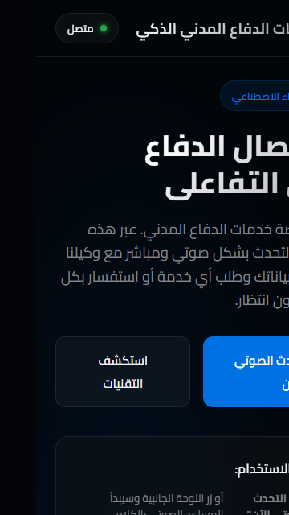
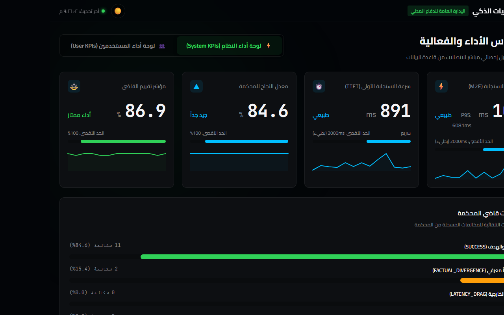
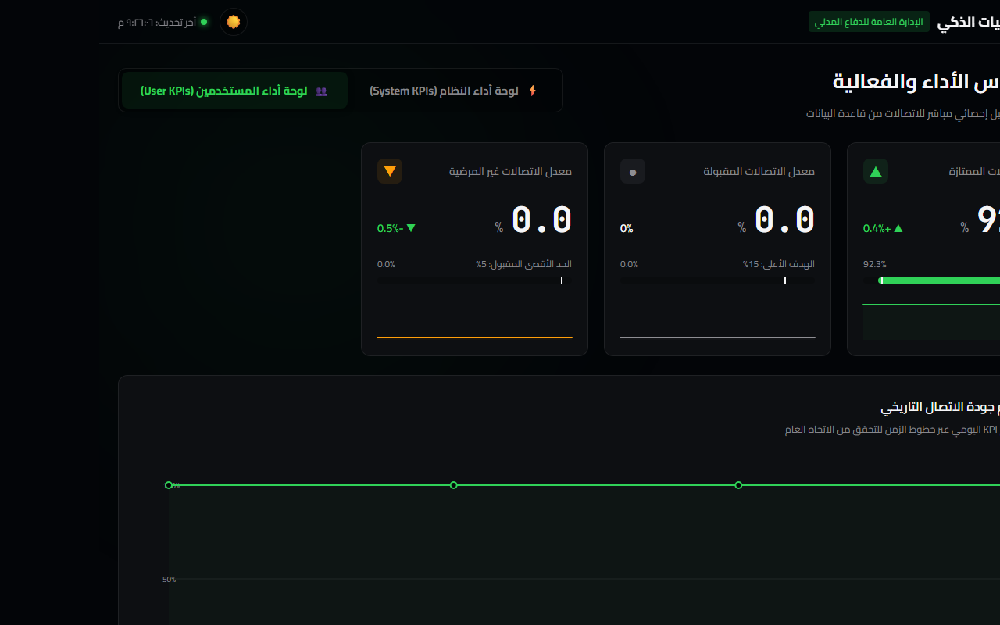
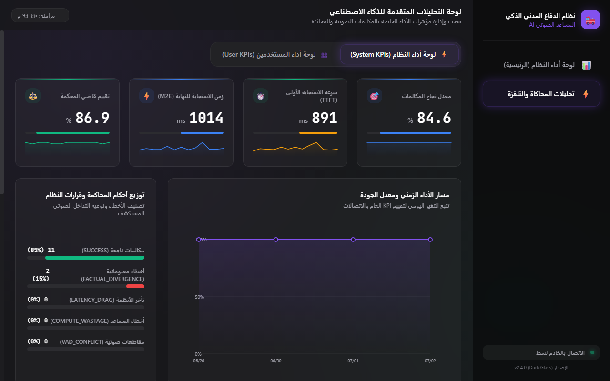

نظام المساعد الصوتي والتحكم الذكي المتكامل
1. نبذة عن النظام (Brief)
يمثل هذا النظام الجيل الجديد من حلول خدمة العملاء المؤتمتة بالذكاء الاصطناعي الصوتي. يقوم النظام باستقبال المكالمات الصوتية للمستخدمين والتحدث معهم باللغة العربية بطلاقة وسلاسة تحاكي البشر، وتحديداً لخدمة عملاء الإدارة العامة للدفاع المدني بمملكة البحرين.
لا يقتصر دور النظام على المحادثة الصوتية فحسب، بل يمتد ليكون خط إنتاج مؤتمت بالكامل (Automation Pipeline). فبمجرد انتهاء المحادثة أو إدخال البيانات، يقوم النظام فوراً بتحديث قواعد البيانات (Google Sheets)، وإرسال بريد إلكتروني رسمي يحتوي على تفاصيل ونصوص المحادثة، وإرسال إشعار فوري عبر تطبيق الـ WhatsApp للمستخدم لتأكيد الطلب أو الخدمة.
2. هيكلية وبنية النظام (System Architecture)
يعتمد النظام على بنية برمجية متكاملة وسريعة الاستجابة مكونة من عدة طبقات:
- واجهة الاتصال الصوتي (ElevenLabs ConvAI): محرك الذكاء الاصطناعي الصوتي المتقدم الذي يفهم الصوت البشري ويحلله باللغة العربية الفصحى واللهجة البحرينية، ويقوم بإدارة الحوار والرد الفوري.
- بوابة الخادم المحلي (App Server - Express): خادم مبني بلغة Node.js يقوم بالتحقق الآمن وتوليد روابط التوثيق وجلب التذاكر الصوتية المشفرة.
- نفق الاتصال التلقائي (Cloudflared Tunnel): مدير متكامل يقوم بإنشاء قنوات ربط عامة آمنة وتحديث الإعدادات والأدوات (Tools) داخل حساب ElevenLabs تلقائياً عند البدء لضمان تدفق البيانات دون انقطاع.
- محرك أتمتة العمليات (n8n Pipeline): العقل المدبر لربط البيانات وتوليد التقارير. يستقبل بيانات المكالمات، يفرزها، ينظف أرقام الهواتف، ثم يوزعها على قنوات التواصل الفورية كـ SMTP و Twilio.
3. الميزات الرئيسية للنظام (Key Features)
🗣️ محادثة صوتية طبيعية بالكامل
استجابة ذكية باللغة العربية مع دعم قواعد تنسيق للأرقام الهاتفية والقصيرة لضمان قراءتها وعرضها بشكل صحيح للعميل.
📋 جمع وتدقيق البيانات فورياً
يقوم المساعد بطلب اسم المتصل ورقم هاتفه للتحقق منهما، واستدعاء أداة حفظ العملاء تلقائياً لتسجيل بياناتهم قبل الانتقال لأي خدمة.
🔗 إشعارات آلية متعددة القنوات
إرسال فوري لنسخة نصية كاملة من الحوار إلى البريد الإلكتروني للمستخدم، مع إرسال ملخص المحادثة عبر الـ WhatsApp فور انتهاء المكالمة.
📊 لوحة تحكم وتحليلات متقدمة
تتبع مباشر لزمن الاستجابة (Latency)، وإجراءات فحص الجودة والتأكد من نجاح أو فشل المكالمات والمبررات الفنية لأي خلل.
4. لقطات حقيقية من المحادثة التفاعلية (Real Conversation Flow)
بمجرد الضغط على زر التحدث، يتم إنشاء اتصال آمن وتوليد تذكرة ElevenLabs بالخلفية. يرحب المساعد بالمتصل ويطلب منه الاسم ورقم الهاتف لبدء المعاملة.

ينطق العميل بياناته أو يكتبها، فيقوم المساعد بالتقاطها واستدعاء أداة حفظ العملاء بالخلفية لتنزيلها بجدول البيانات.
عندما يسأل المتصل عن هاتف مركز خدمة العملاء، يقوم الوكيل بكتابة الرقم 17461100 مجرداً بدون أي شرطات أو علامات اقتباس، مع وضعه على سطر منفرد مستقل يسبقه سطر فارغ ويليه سطر فارغ لتسهيل العرض والنسخ.

عندما يطلب العميل نسخة مكتوبة، يوجهه الوكيل لكتابتها في الحقل النصي بالأسفل لتفادي التلعثم الصوتي في نطق أحرف البريد الإلكتروني.
يكتب العميل البريد الإلكتروني بصيغة آمنة، فيقوم النظام بتأكيد الحفظ وربطه بسجل المكالمة فورياً تمهيداً لتوليد وإرسال ملف التقرير.

5. لقطات حقيقية من لوحات الإحصاء ومؤشرات الأداء (Real Dashboards & KPIs)
لقطة شاشة كاملة لصفحة dashboard.html الرئيسية وتعرض متوسط زمن الاستجابة (TTFT)، وتوزيع سرعات الاتصال، وحساب التكاليف ومعدلات نجاح خط الإنتاج التلقائي n8n.

لقطة شاشة حقيقية لعلامة التبويب الثانية بالدردشة وتعرض تفاصيل تقييم العملاء (100%، 50%، 0% مؤشر KPI) والتعليقات المكتوبة والتقارير المأخوذة مباشرة من أداء المستند الذكي.

لقطة شاشة حقيقية لصفحة dashboardsecondary.html وتعرض توزيع الفحص والتقييم لجلسات ElevenLabs ومقاييس زمن استجابة المحادثة ونسب التحليلات المتقدمة للقرارات والعمليات بالخلفية.

6. الخلاصة والقيمة المضافة (Conclusion)
يقدم هذا النظام للجهات الخدمية وحكومات المستقبل أداة فائقة الفعالية لتقليص الضغط على مراكز الاتصال البشرية بنسبة تتجاوز 70%، مع الحفاظ على رضا العملاء من خلال الاستجابة الفورية على مدار الساعة وطوال أيام الأسبوع، مع حفظ البيانات وتوزيع المهام في ثوانٍ معدودة.